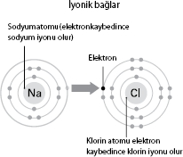

Kimyasal Bağlar
Maddelerin yapısını anlamaya açılan kapı
Prof. Dr. Tom Welton, sürdürülebilir kimya dalında
profesör ve Imperial College Bölüm Başkanı
MÖ 400 civarına gittiğimizde Yunan filozof Demokritos bir gün evde otururken taze pişmiş bir ekmeğin kokusunu aldı. Rivayete göre Demokritos bir evraka anı yaşayıp minicik parçacıkların ekmek somunundan çıkıp havada yüzerek burnuna geldiğini hayal etti. Bu parçacıklara "atom" adını verdi. Eğer varsayımı doğru idiyse, katı nesnelerin, kıyafetlerde yaygın şekilde bulunan "erkek ve dişi kopçalar" gibi, bir şekilde bir arada tutulduğu sonucuna vardı. Demokritos'un fikirlerinin çoğu zamanının ilerisinde olmasına rağmen atomların nasıl bir arada tutulduğu hakkındaki kuramı kesinlikle yanlıştı.
"Atomlar arasındaki kimyasal bağlar içinde bulunduğumuz ve tecrübe ettiğimiz maddi dünyayı mümkün kılar.
Tom Welton
Kimyasal Bağ Çeşitleri
Atomlar elektron yörüngeleriyle çevrili bir çekirdeğe sahiptir. Birinci yörüngede iki elektron, ikinci yörüngede sekiz elektron ve üçüncü yörüngede de 18 elektron vardır. Daha az aktif olmak ve daha kararlı hale geçmek için atomlar genellikle elektronları paylaşıp yörüngelerini doldururlar.
Kovalent Bağlar
Kovalent bağlarda atomlar kararlı hale geçmek için elektronları paylaşırlar. Örneğin, amonyakta (NH3) nitrojen atomuyla 3 hidrojen atomu arasında kovalent bağlar vardır. |
|
Hidrojen Bağları
Hidrojen atomları ile oksijen ve nitrojen arasında zayıf elektrik çekimleri vardır. Suda oksijen atomu normalden fazla elektron payına sahip olduğu için biraz negatif yüke sahipken, iki hidrojen atomu biraz pozitif yüke sahiptir, böylece atomlar arasında bir elektrostatik çekim oluşur. |
|
İyonik Bağlar
Atomlar elektron alışverişi yapıp artı veya eksi yük kazandıklarında iyon denilen elektrik yüklü parçacıklar oluşur. Kovalent bağdan farklı olarak bağ kuran elektron paylaşılmaz, transfer edilir. Bir atomun dış yörüngesindeki elektronlar başka bir atomun dış yörüngesindeki boşluğu doldurmak üzere harekete geçer. Örneğin, sodyum klorürde (bildiğimiz tuz), sodyum atomu bir elektron vererek sodyum iyonu haline gelir ve klor atomu da bu elektronu alarak klor iyonu haline gelir. Elektrostatik çekim bu iyonları bir arada tutar. |
 |
Metalik Bağlar
Katı metaller –ya da alaşımlar– katı kristal bir örgü yapısına sahiptir. Metal atomları dış yörüngedeki elektronları kaybederler, sonra örgü içinde serbestçe hareket eden gevşek elektronlar denizinde çalkalanırlar. Katı örgü yapısı metali sağlam yaparken, serbest elektronlar metalin elektriği ve ısıyı kolayca iletebilmesini sağlar. |
|
Van der Waals Kuvvetleri
Elektronların ne paylaşıldığı ne de transfer edildiği, sadece atom katmanları arasında bir tür "yapışkanlığın" mevcut olduğu nispeten zayıf kimyasal bağlar da vardır. Örneğin, grafitte karbon katmanları Van der Waals kuvvetlerince bir arada tutulur. Aslında çekim gücü değişen başlıca beş çeşit kimyasal bağ vardır. Bu bağların keşfedilmesinin tarihi birkaç yüzyıla yayılır ve bir dizi aktörü içerir. |
 |
Atomlar elektronların hareketiyle bir arada tutulur, ama elektronlar farklı yollarla alınıp verilebilir veya paylaşılabilir.
1704'te yayınladığı Opticks adındaki ünlü kitabında Newton, atomların birbirine nasıl bağlandığı muammasını ele aldı. Onları bir arada tutan bir kuvvetin olması gerektiğini anlamıştı, ama bu kuvvetin tam olarak nasıl çalıştığını hiçbir zaman ortaya çıkaramadı. İsveç'in Östergötland şehrinden gelen bir kimyacı akla yatkın bir kuram ortaya attı.
Jöns Jakop Berzelius hekim olarak işe başlayıp zamanla kimyaya yöneldi. 1819 yılında atomları birbirine çeken bir çeşit elektromanyetik kuvvetin olması gerektiğini öne sürdü. 1800'lerin ortalarında bir grup kimyacı bu fikri geliştirip "değerlik bağı kuramı"na ulaştılar. Buna göre çekim pozitif ve negatif "kutuplar"dan –elektronlar ve protonlar– kaynaklanıyordu. Kimyacılardan biri August Friedrich Kekulé atomların kaç tane bağ oluşturabileceğini inceledi. 1857'de karbonun dört bağ oluşturduğu için dört değerliğe sahip olduğu sonucuna vardı. Ayrıca benzen molekülünün (C6 H6) simetrik karbon halkası oluşturduğunu da keşfetti. Rüyasında gördüğü kuyruğunu ısıran bir yılandan esinlenerek bu keşfi yaptığını savundu.
ABD'li kimyacı Gilbert N. Lewis 1916'da elektron çifti bağı kavramını keşfetti. Buna göre iki atomaltı elektrona kadar elektron paylaşımı yapabiliyordu. Bu daha sonraları "kovalent bağ kurma" olarak tanındı. Aynı yıl Alman fizikçi Walther Kossel farklı bir kuram öne sürdü: Elektronlar atomlar arasında alınıp veriliyordu. Buna da iyonik bağ kurma dendi.
Kimyacılar araştırdıkça, kovalent ve iyonik bağların maddelerin tümünün yapısını açıklamaya yetmediğini anladılar. Aslında Hollandalı bilimci Johannes Diderik van der Waals yıllar önce zekice bir fikirle gelmişti. 1873'te gazlar ve onların düşük kaynama noktaları üzerine yaptığı gözlemler atomlar arasında nispeten zayıf kimyasal bağların olması gerektiği fikrini verdi. Şimdi Van der Waals kuvvetleri diye bilinen kuvvetler sayesinde bu tür maddelerdeki atomlar arasında kurulan bağ iyonik veya kovalent bağdan yaklaşık 100 kat daha zayıftır, süper güçlü tutkala karşın Pritt'e benzer.
| |
Bunları Biliyor Muydunuz? |
| |
Elmas, inanılmaz derecede sert bir maddedir, çünkü karbon atomları arasında her bir karbon atomun komşu karbon atomlardan eşit uzaklıkta olduğu üç boyutlu sert bir ağ oluşturan güçlü kovalent bağları vardır.Bir senede elde edebileceğimiz antiproton miktarı bir lambayı üç saniye boyunca yakmaya anca yeter. |
Van der Waals kuvvetlerinin değişik formlarda mevcut olduğunu artık biliyoruz: Üç çekim kuvveti ve bir itim kuvveti. Molekül için çekim kuvvetinin bir örneği su molekülleri arasındaki hidrojen bağlarıdır. Bu bağlar yeryüzündeki yaşam için büyük öneme sahiptir. İtim kuvvetine örnek ise suyun yaprakların parlak yüzeyinde boncuk gibi dizilmesini sağlayan hidrofobik kuvvettir.
Çok çeşitli kimyasal bağların keşfedilmesi, insanın gelişimi ve teknolojinin evrimi için büyük bir atılım sağlar. Welton'un da belirttiği gibi, "Atomların nasıl bağ kurduğunu anlayarak, onları nasıl kullanacağımızı ve hayatlarımızı atalarımızınkinden daha sağlıklı ve kolay hale getiren bütün o insan yapımı şeylerle modern dünyamızı yaratmayı öğrendik."